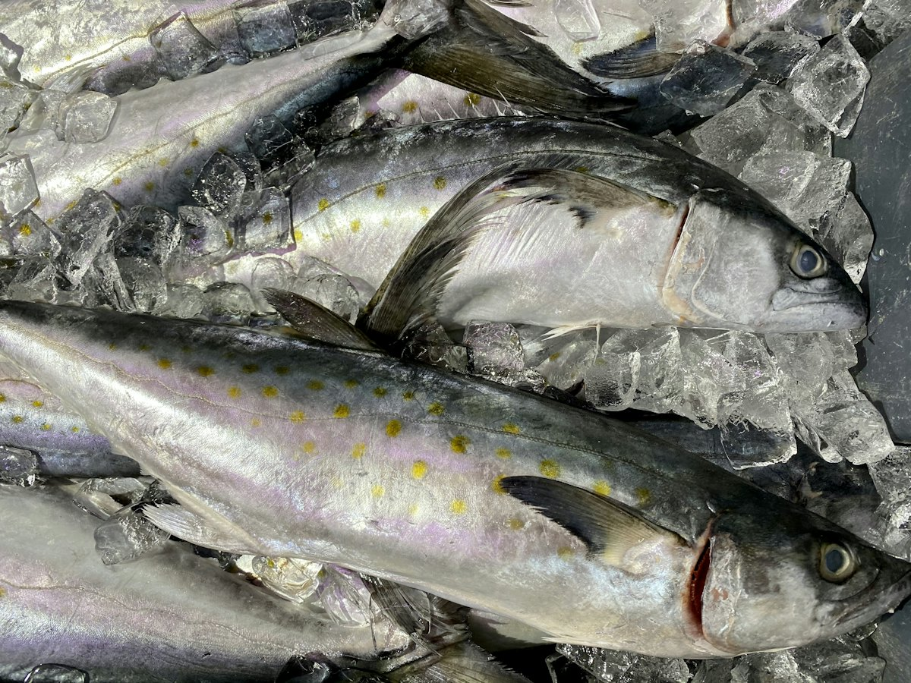
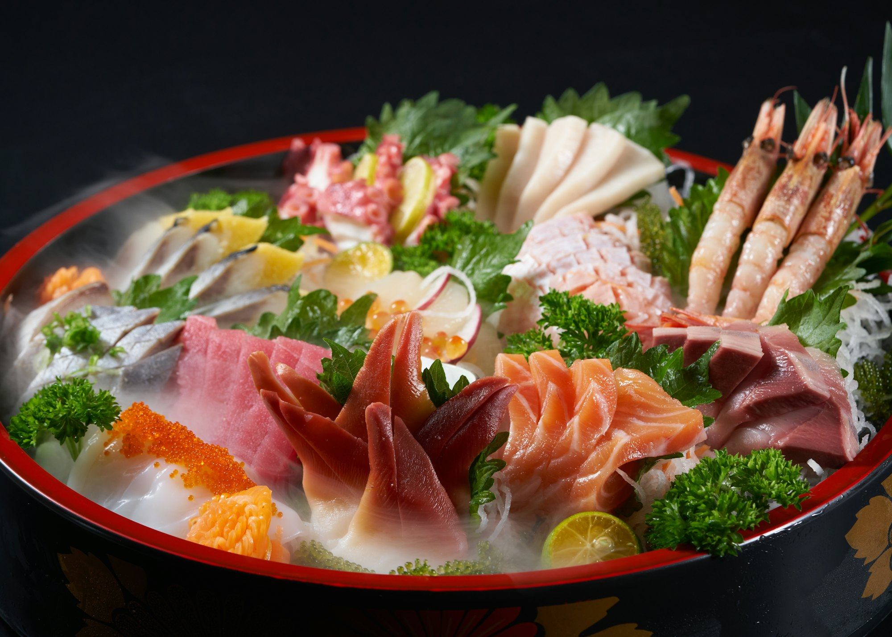
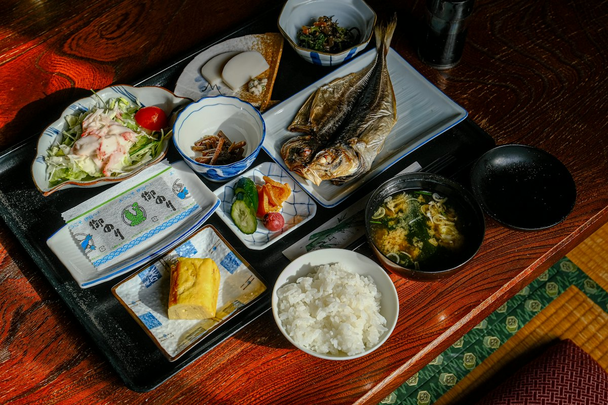
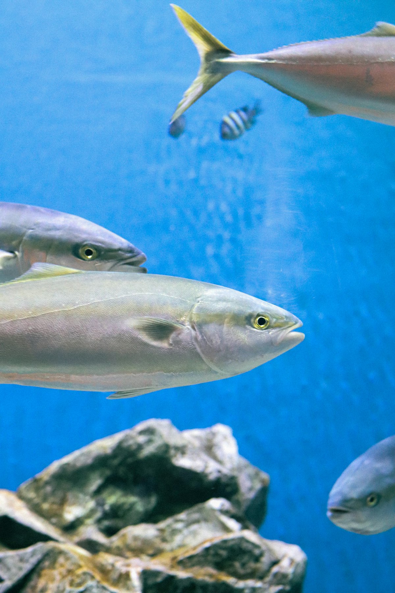
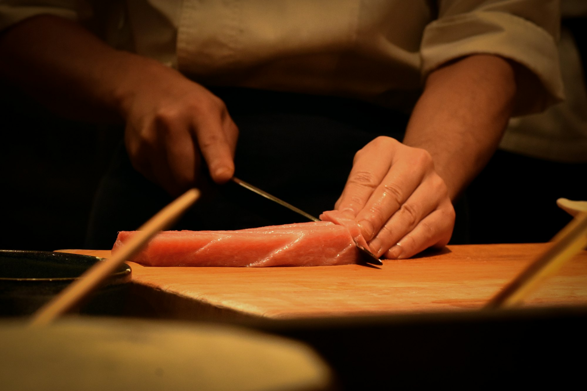

オホーツク 秋ブリ刺身
さくさくアジフライ付 現金特価 2,580円

和食・鮮魚 茨城県土浦市荒川沖
行きも帰りもお食事は旭屋で。知床羅臼の秋ブリ、壱岐のサワラ、宮古の戻りカツオなど、日本各地から届くブランド魚を定食でお出ししています。
本日のおすすめ
オホーツク 秋ブリ
北海道 知床羅臼 直送
10kgを超えて、はじめて「ブリ」。本日は12.6kg。
現金特価 2,580円さくさくアジフライ付
位置はおおよそです。お品書きは日によって変わります
北海道知床羅臼から直送のオホーツクの秋ブリ。10kgを超えるものをはじめて「ブリ」と呼び、刺身でお出しします。
長崎県壱岐の一本釣りサワラは皮目を強火で焦がした焼霜造りで。岩手県宮古港直送の日帰り漁のカツオ、秋田県男鹿の生ミズタコも。どの定食にも、さくさくのアジフライが付きます。

さくさくアジフライ付 現金特価 2,580円

焼霜造り さくさくアジフライ付 現金特価 2,380円

薄塩で焼いた、骨離れの良い身 1,980円〜

| 昼 | 11:00〜14:00（最終入店） |
|---|---|
| 夜 | 17:30〜21:30（最終入店） |
| 定休日 | 火曜日・不定休 |
| お支払い | 現金のみ |
ご予約・団体様のご相談はお電話で。在庫によってはご入店をお断りする場合があります。